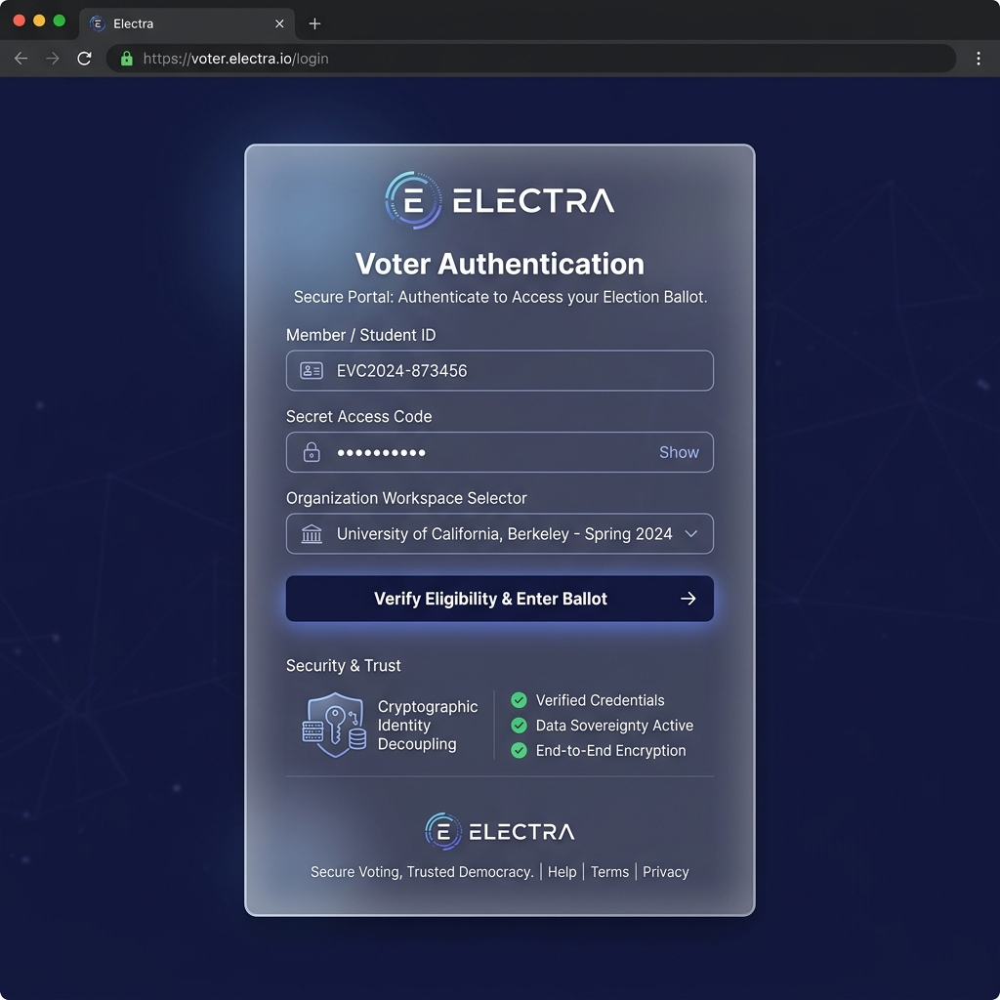
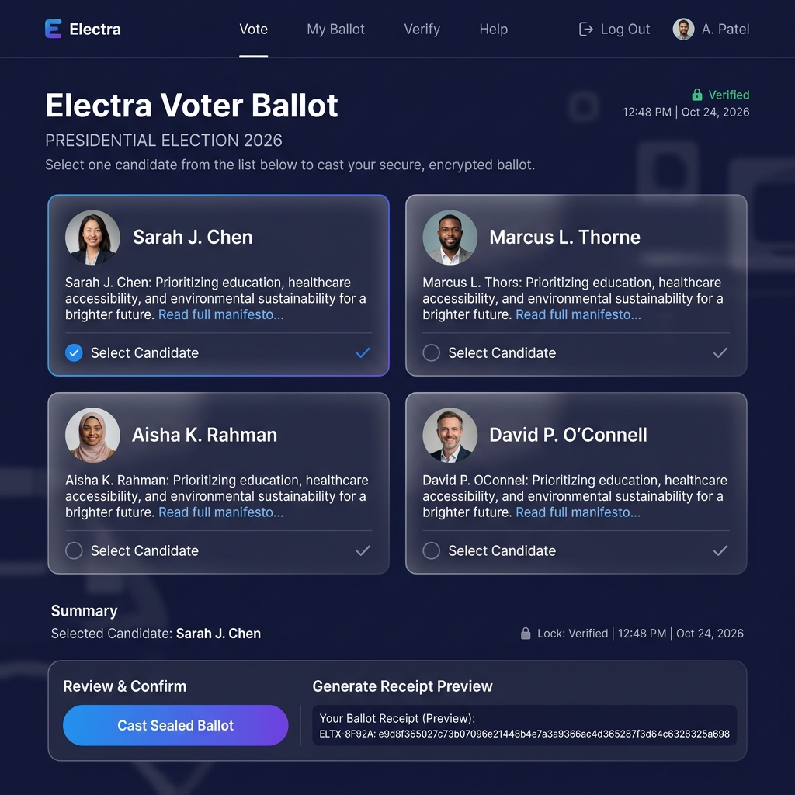
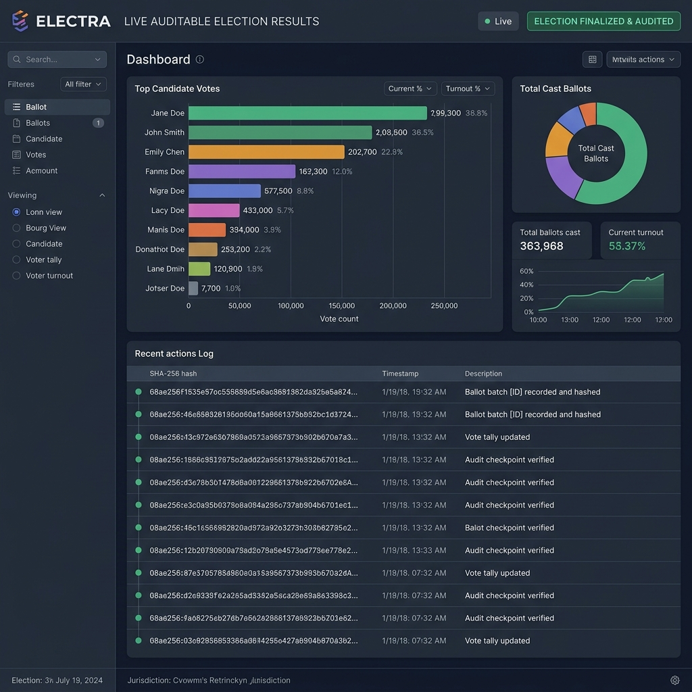
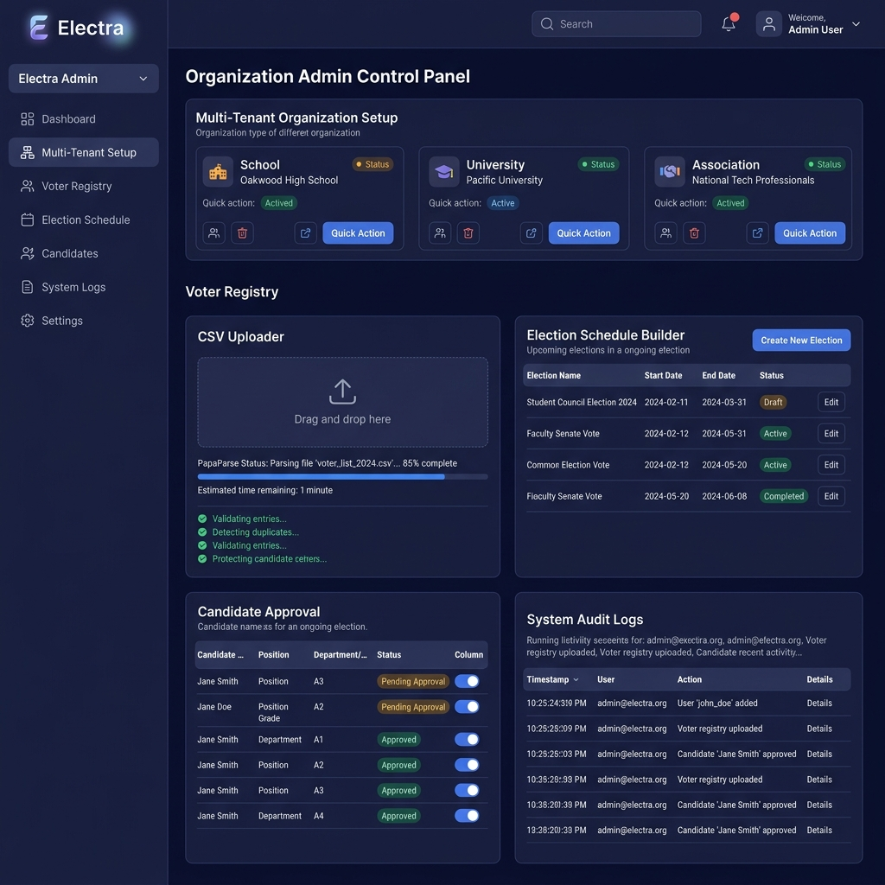

Electra
Secure Digital Election Platform for Verified, Auditable & Privacy-Preserving Organizational Voting
What is Electra?
Electra is a security-first digital election platform designed and developed by Vortex Studio to provide robust, auditable voting infrastructure for structured organizational elections. It empowers schools, universities, churches, professional associations, companies, and NGOs to host verified digital elections with absolute integrity and privacy.
The Challenge
Conducting organizational elections manually or through generic web forms introduces severe risks: unverified voter access, duplicate ballot submission, lack of secret ballot privacy, unauthorized tally tampering, and disputes over election results. Organizations require a secure, multi-tenant digital election workflow that enforces strict one-person-one-vote guarantees while remaining effortless for non-technical voters.
Design & UX Approach
Vortex Studio architected Electra with a trust-first design language. Utilizing a deep indigo palette (#171C46) paired with high-clarity ice blue accents (#BAE6FD), the interface communicates technical rigor, cryptographic security, and administrative transparency at every step.
Information Architecture
Structured a clear 5-stage election lifecycle: Setup → Verification → Voting → Finalization → Certification.
Trust Communication
Prominently surfaced verification indicators, cryptographic SHA-256 ballot hashes, and privacy badges to build user confidence.
Dashboard Workflows
Engineered streamlined administrative tools for roster CSV imports, candidate manifestos, and real-time result auditing.
Responsive Experience
Optimized single-hand mobile voting for students, alumni, and committee members on any mobile browser.
Core Features
Engineered to deliver enterprise-grade election integrity for organizations of any scale.
Verified Voter Eligibility
Only individuals on the pre-approved organizational register can authenticate and access ballots using official Member/Student IDs and access codes.
One-Person-One-Vote
Server-side database locks mark participation atomically upon ballot submission, preventing duplicate votes across devices or replayed requests.
Cryptographic Ballot Secrecy
Architectural database separation guarantees that voter identity records cannot be traced to specific candidate choices, preserving total ballot privacy.
SHA-256 Ballot Receipt
Every voter receives a unique cryptographic SHA-256 hash receipt code upon voting, providing verifiable proof of recorded participation.
Auditable Results
Results are calculated strictly from recorded ballots in the database and sealed with immutable audit logs upon election closure.
Multi-Organization Management
Isolated workspaces supporting schools, universities, churches, associations, corporate boards, and non-profit organizations.
Visual Gallery




Engineering Foundation
- Next.js 14 (App Router)
- TypeScript & Tailwind CSS
- Prisma ORM 5.22 (PostgreSQL / SQLite)
- Jose JWT & SHA-256 Verification
- PapaParse CSV Roster Import
- Vercel Cloud Serverless Host
Vortex Studio's Role
- End-to-End Product Architecture
- Information Architecture & UX
- Security & Trust Interface Design
- Responsive Multi-Device UI
- Full-Stack Next.js Implementation
Final Result
Delivered a robust, high-trust digital election platform enabling organizations to manage structured elections with verified eligibility, atomic vote locks, and immutable cryptographic audit trails.
Explore Electra Live
Test the live digital election interface, view voter verification workflows, and inspect the platform in production.